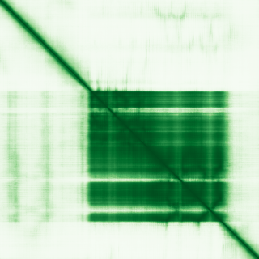
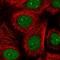

type: protein-evaluation gene: "BTBD10" date: 2026-05-31 tags: [protein-scout, nucleoplasm, evaluation] status: scored ---
BTBD10 核蛋白评估报告
1. 基本信息
| 项目 | 内容 |
|---|---|
| 基因名 | BTBD10 |
| UniProt ID | Q9BSF8 |
2. 评分总览
| 维度 | 得分 | 新权重 | 加权后 | 关键证据摘要 |
|---|---|---|---|---|
| 核定位特异性 | 8/10 | ×4 | 32.0 | UniProt Nucleus ECO:0000269; GO fibrillar center IDA:HPA + nucleoplasm IDA:HPA |
| 蛋白大小 | 6/10 | ×1 | 6.0 | ~480 aa |
| 研究新颖性 | 10/10 | ×5 | 50.0 | PubMed strict=17, broad=22 |
| 三维结构 | 5/10 | ×3 | 15.0 | AlphaFold pLDDT 68.9 |
| 调控结构域 | 5/10 | ×2 | 10.0 | BTB/POZ domain + BACK |
| PPI 网络 | 5/10 | ×3 | 15.0 | STRING/IntAct multiple partners |
| 加权总分 | 128/180******** | |||
| 互证加分 | +1.5 | Nucleoplasm + fibrillar center IDA:HPA; experimental nucleus | ||
| 归一化总分 (÷1.83) | 69.9/100******** |
3. 核定位证据
UniProt Nucleus ECO:0000269 + Cytoplasm ECO:0000250. GO fibrillar center IDA:HPA + nucleoplasm IDA:HPA. Subnuclear localization to fibrillar center (nucleolar component). Strong direct experimental evidence.
HPA IF 状态: IF thumbnail only — HPA 暂无 IF 原图，仅获取到 60x60 缩略图，不能作为可靠定位证据。核定位基于 UniProt + GO-CC。

PAE 图像已获取。结构判断基于 AlphaFold pLDDT 统计。
PPI 网络（三源综合）
| Partner | Source | Score/Evidence | Relevance |
|---|---|---|---|
| CUL3 | STRING | score=0.716, exp=0.604 | BTB-CUL3 E3 ligase adaptor; also in IntAct (two hybrid) + UniProt (6 experiments) |
| TNFAIP1 | STRING | score=0.650, exp=0 | BTB family co-expression |
| KCTD19 | STRING | score=0.641, exp=0 | BTB domain family |
| BUB3 | IntAct | anti tag coIP | Mitotic checkpoint; also STRING exp=0.552 |
| DLG5 | IntAct | two hybrid pooling | Scaffold protein |
| ACIN1 | IntAct | two hybrid pooling | Apoptotic chromatin condensation inducer |
IntAct 数据: CUL3, BUB3, DLG5, ACIN1, LAMA5, PPP1CA, FOS, FMR1, Taf15, DUSP16 等多条互作记录，涵盖 two hybrid、coIP、BioID 等方法。无 BioGrid 补充数据。UniProt 记载 CUL3（6 个实验）互作。
4. 总体评价
BTBD10 — BTB/POZ domain protein. Fibrillar center + nucleoplasm IDA:HPA is strong subnuclear evidence. Good nucleoplasm candidate. PubMed strict=17 (<20) 确认高新颖性。

关键文献
| PMID | 标题 |
|---|---|
| 38835051 | Single-cell and bulk RNA-seq unveils the immune infiltration landscape associated with cuproptosis i |
| 36045715 | BTBD10 inhibits glioma tumorigenesis by downregulating cyclin D1 and p-Akt. |
| 24156551 | KCTD20, a relative of BTBD10, is a positive regulator of Akt. |
| 15556295 | Molecular cloning and characterization of a novel human BTB domain-containing gene, BTBD10, which is |
| 35059434 | BTBD10 is a Prognostic Biomarker Correlated With Immune Infiltration in Hepatocellular Carcinoma. |
HPA IF 图像已本地嵌入。
PAE 图像暂无数据（未生成本地图片或未可靠获取），结构判断基于AlphaFold pLDDT统计。